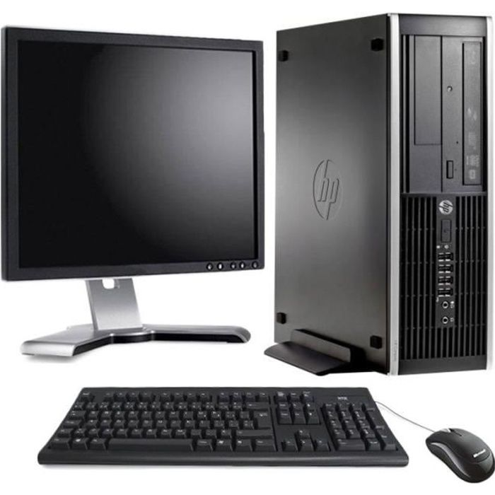

Les ordinateurs
L'ordinateur
Un ordinateur est un système de traitement de l'information programmable tel que défini par Alan Turing et qui fonctionne par la lecture séquentielle d'un ensemble d'instructions, organisées en programmes, qui lui font exécuter des opérations logiques et arithmétiques. Sa structure physique actuelle fait que toutes les opérations reposent sur la logique binaire et sur des nombres formés à partir de chiffres binaires. Dès sa mise sous tension, un ordinateur exécute, l'une après l'autre, des instructions qui lui font lire, manipuler, puis réécrire un ensemble de données déterminées par une mémoire morte d'amorçage. Des tests et des sauts conditionnels permettent de passer à l'instruction suivante et donc d'agir différemment en fonction des données ou des nécessités du moment ou de l'environnement.
L'ecran
Un écran est une surface permettant de protéger, faire obstacle, cacher. L'étymologie du mot écran est incertaine, mais les termes anglais screen et néerlandais scherm renvoient aux idées de clôture ou de paravent1. Par exemple, l'écran solaire ou l'écran antiparasite sont destinés à protéger d'une source de rayonnement ou d'onde pouvant être nuisible. De même, dans un sens métaphorique, un "écran de fumée" permet de dissimuler un élément stratégique à des ennemis ou des concurrents. Dans un sens plus récent mais qui devient aujourd'hui le plus courant, un écran est une surface permettant de projeter des images.
Un pc fixe

Pied de page